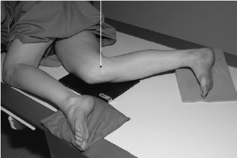

Knee(Lateral)
Centering point:Centre to the middle of the superior border of the medial tibial
condyle, with the central ray at 90 degrees to the long axis
of the tibia.

Cassette Size:18cm x 24cm (8 x 12 ins)
Potrait
Exposure Factors:65kVp on
10MaS
FFD:100cm
Bucky/Grid:No
Filter:No
Pathologies:Fractures, lesions
Position of patient and cassette
- The patient lies on the side to be examined, with the knee
flexed at 45 or 90 degrees.
- The other limb is brought forward in front of the one being
examined and supported on a sandbag.
- A sandbag is placed under the ankle of the affected side to
bring the long axis of the tibia parallel to the cassette.
- The position of the limb is now adjusted to ensure that the
femoral condyles are superimposed vertically.
- The centre of the cassette is placed level with the medial
tibial condyle.